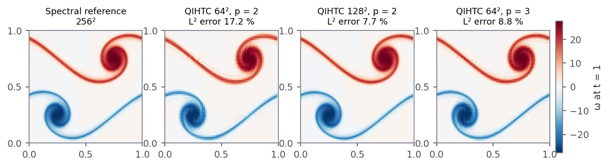
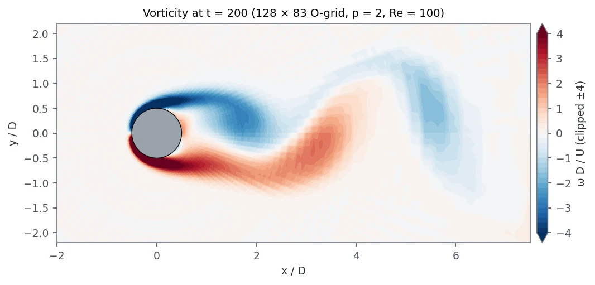
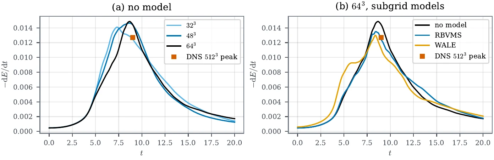
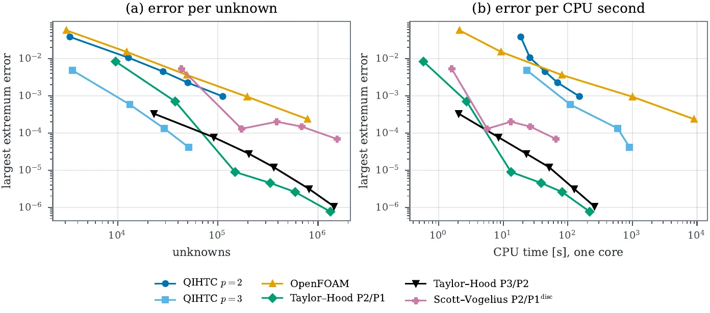

Own research code, 2026
Divergence-free spline CFD: what exact incompressibility costs
A Navier–Stokes solver on divergence-conforming B-splines whose velocity is divergence-free to round-off, verified, validated on seven benchmarks and measured against OpenFOAM and high-order finite elements at equal accuracy.

Why this method
Standard CFD codes solve incompressible flow with second-order finite volumes. Mass is conserved through face fluxes, but the velocity they store and pass on to heat or particle transport is not divergence-free, and upwind convection adds numerical dissipation that damps vortices. Taylor–Hood finite elements reach higher order but satisfy incompressibility only weakly, so their velocity error grows with the pressure.
Divergence-conforming B-splines form a discrete de Rham complex: the divergence of the velocity space maps exactly onto the pressure space. The discrete velocity is then divergence-free at every point, and its error does not depend on the pressure. These properties are proven in the literature. What I could not find was a measurement of what they cost and buy against the discretisations people actually use. That became the question of this project.
Verification first: does the code do what the maths says?
Before any benchmark, I checked the properties the method is supposed to have, on problems with exact answers:
- Order of accuracy. Taylor–Green vortex: order 2.04 at degree p = 2 and 3.06 at p = 3. Third-order time stepping (IMEX-BDF3) measures 3.01, once a three-part start-up was added; without it the order drops.
- Pressure robustness. In Taylor–Couette flow on a curved annulus, convection is balanced entirely by pressure. The velocity error with convection is identical to the Stokes error to 13 digits: the velocity does not see the pressure.
- Divergence. The largest pointwise divergence over every run in the paper is 1.8 × 10−13, round-off level, with no post-processing projection. Getting there needed Nitsche-imposed wall conditions (to avoid a rank deficiency at corners) and row scaling of the saddle-point system.
Why these seven benchmarks
Each one tests a different property, so together they cover what a flow solver has to get right:
- Lid-driven cavity, Re 1000. The classic Ghia data have only three to four digits and cannot show errors below about 10−3, so I compared with the spectral values of Botella & Peyret. The largest error in the velocity extrema falls from 3.8 × 10−2 on 32² elements to 6.9 × 10−4 on 256².
- Backward-facing step, Re 800. Separation, reattachment and an open outlet. Lower reattachment at 6.107 against Gartling's 6.10.
- Double shear layer. Thin braids that punish numerical dissipation. Cubic splines on 64² give nearly the error of quadratic splines on 128² with a quarter of the unknowns.
- Dipole–wall collision, Re 625. Vorticity generated at a no-slip wall. The collision time agrees on every mesh, but the enstrophy peak still grows with resolution, which made it the test case for local refinement.
- Cylinder wake, Re 100 on a curved, Piola-mapped O-grid. Strouhal number 0.1653, inside the 0.164–0.166 reference band on every mesh; drag and lift approach the reference from below.
- 3D Taylor–Green vortex, Re 1600 up to 64³ elements (about 1 million unknowns) with an FFT-based implicit step. The scheme adds almost no numerical dissipation (total and viscous dissipation agree within 0.2 % at the peak), so without a subgrid model it overshoots the DNS peak by 17 %. RBVMS brings that to 6 % and WALE to 2 %, but WALE also dissipates about 1.6× too much during the earlier laminar phase, so its better peak is partly for the wrong reason.


Adaptive refinement, and a learned version that lost
The dipole case needs resolution only near the wall. I added truncated hierarchical B-spline (THB) refinement to the unsteady solver, with a solution transfer that keeps the velocity exactly divergence-free. Driven by a residual-based (RBVMS) error indicator, it reaches 9 % vorticity error with 32 % of the unknowns of the uniform fine mesh, where the uniform coarse mesh has 75 % error.
I also trained a graph-network refinement policy with reinforcement learning against that baseline. Across three training seeds it did not beat classical Dörfler marking consistently, so it is not used and the paper says so.
The main question: cost at equal accuracy
A fair comparison needs the same problems, the same error measure, one CPU core for everyone, and two rivals: a finite-volume code (ESI OpenFOAM v2512) and a strong high-order code (DOLFINx with Taylor–Hood and Scott–Vogelius elements). Comparing only against the second-order code would flatter the splines, so DOLFINx is the one that keeps the result honest.

Per unknown, cubic splines were the most accurate discretisation in the range my runs cover, and their smoothness allows a two- to four-times larger explicit time step than Taylor–Hood. Per CPU second the answer depends on the code: OpenFOAM is cheapest at coarse accuracy, my Python code wins at moderate accuracy, and compiled DOLFINx is faster than both at every target. The gap to DOLFINx is the cost per unknown of a Python implementation, not of the discretisation. Many published “high-order beats finite volume” speed-ups, including the 7–16× measured here, mainly reflect the order of accuracy.
One side finding: the openfoam.org 13 package I first installed gave 0.67–0.69 times the exact laminar Poiseuille flow rate on every mesh and time step, including its own tutorial case. ESI v2512 was exact on the same case, so I switched references and documented the reproduction.
Current limits, and the plan to close them
The study above shows where the code stands. Each limit below has a concrete next step and a test that will show whether the step worked. They are ordered by impact: the first one is what turns the method's efficiency into a cost advantage.
- Speed per unknown (7–119× slower than compiled DOLFINx). The cause is Python assembly and direct factorisation, not the discretisation. Plan: compiled, matrix-free operators using sum factorisation, which already exists for the 2D viscous and mass operators and the 3D periodic convection term, combined with a Krylov solver and a block preconditioner for the saddle-point system. Test: repeat the same equal-accuracy study on the same problems and core, and measure how much of the CPU-time gap closes while the unknowns-per-error advantage is kept.
- Single-node direct solvers. Factorisation does not scale to large 3D problems. Plan: once the operators are matrix-free, add domain decomposition with MPI. Test: strong and weak scaling on the 3D Taylor–Green vortex.
- One smooth patch of geometry. Real CAD needs several patches. Plan: couple Piola-mapped patches through the constrained (augmented-Lagrangian) solver that already handles rank-deficient saddle-point systems. Test: the curved-annulus and cylinder cases split into several patches must keep the design order and a divergence at round-off.
- 3D only in periodic boxes, and subgrid models untested near walls. Plan: non-periodic 3D boundaries with the same Nitsche wall treatment as in 2D, then RBVMS and WALE on wall-bounded turbulence. Test: turbulent channel flow at Reτ = 180 against published DNS profiles.
- Two-level refinement on closed boxes. Plan: more THB levels and refinement on mapped and open domains. Test: the dipole–wall collision with three or more levels against the uniform fine run, at the same unknown budget.
- Open availability. Plan: publish the repository with an archived, citable release alongside the manuscript, so every number on this page can be reproduced by others.
The learned refinement policy stays out until it beats Dörfler marking consistently across seeds; the classical indicator remains the default.
Takeaways
The efficiency of divergence-conforming splines is real and now measured: fewest unknowns for a given error, exact incompressibility, pressure robustness and low dissipation. Turning that into a cost advantage is an implementation task, and the plan above sets out the steps in order, starting with compiled matrix-free operators. A manuscript for Computers & Fluids is prepared; the code is not public yet.
Lessons learned
- A number without a script is not a result. Every figure, table and number in the manuscript is now generated from result files.
- Compare against the strongest rival, not the convenient one. Against OpenFOAM alone the splines look 7–16× faster; DOLFINx shows the speed comes from the order of accuracy and tells me exactly where to optimise next.
- Separate the method from the implementation. Plotting error against unknowns and against CPU time answers two different questions.
- Check the reference code on an exact solution. A widely used OpenFOAM package was wrong on laminar Poiseuille flow.
- Machine learning has to beat the classical baseline to stay in. The learned refinement policy did not, so it is reported and not used.